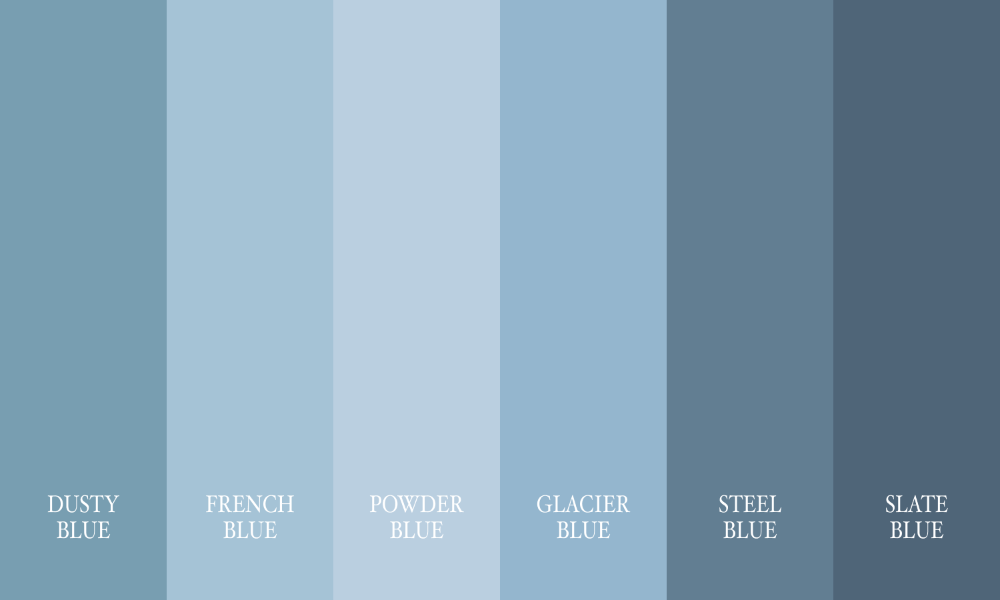

For Men
- Collared dress shirts are encouraged.
- Tailored dress pants, slacks, or chinos are preferred.
- No jeans or distressed denim.
- Suits and jackets are welcome, but not required.
- Dress shoes, loafers, or polished dress boots are recommended.

William & Lissette
6/15/2026
Civil Ceremony
Santa Barbara Courthouse
Agenda
Dress Code

We invite guests to wear shades of blue, neutrals, and soft coastal tones inspired by Santa Barbara.
To allow the bride and groom to stand out, we kindly ask guests to avoid wearing white, ivory, dark navy, or black attire.
Portions of the courthouse grounds are grass, so comfortable footwear is highly recommended.
Weather
Low 70s °F
In June, Santa Barbara is typically mild and pleasant, with daytime warmth, cooler evenings in the upper 50s, and a light coastal breeze.
Parking
Street parking is available, but limited. Parking is available at City Lots 6 & 7, with the first 75 minutes free.
Please allow yourself plenty of time driving up from LA, as late arrivals may result in cancellation of our ceremony.
Our Story
While out in San Francisco during a going-away gathering, William spotted a beautiful curly-brown haired girl across the bar. After talking for several minutes, Lissette realized there was something about William she could not quite ignore.
The rest is history…
William swears he reverse engineered the Tokyo trip by planting seeds early, but Lissette had a strange feeling she should look into visiting Japan during cherry blossom season. Little did she know, William had already been planning the proposal months in advance.
Among the cherry blossoms on a quiet, sunny day at the base of Mt. Fuji, William started to recite a poem in Spanish. Afterwards, he asked Lissette to spend forever with him.
She immediately started crying, but eventually said yes.
The ocean has always been significant to both of us, with Lissette having been born in the Dominican Republic and William in Southern California.
Santa Barbara felt like the perfect place to celebrate this next chapter together: coastal, peaceful, and with the people we love most.
FAQs
Yes.
While we love your little ones, we kindly ask that the ceremony remain adults only.
We recommend arriving by 11:00am to allow enough time for parking, walking around, and getting settled before the ceremony begins.
No, transportation will not be provided.
No, please — your presence is more than enough.
Beaches: Butterfly Beach, East Beach, Leadbetter Beach
Funk Zone: Artsy and walkable, with wine tastings, breweries, and casual bites
State Street: Very walkable, with ice cream, coffee, bars, and shopping
Montecito: A beautiful coastal town nearby with boutique shopping, cafes, beaches, and scenic walks